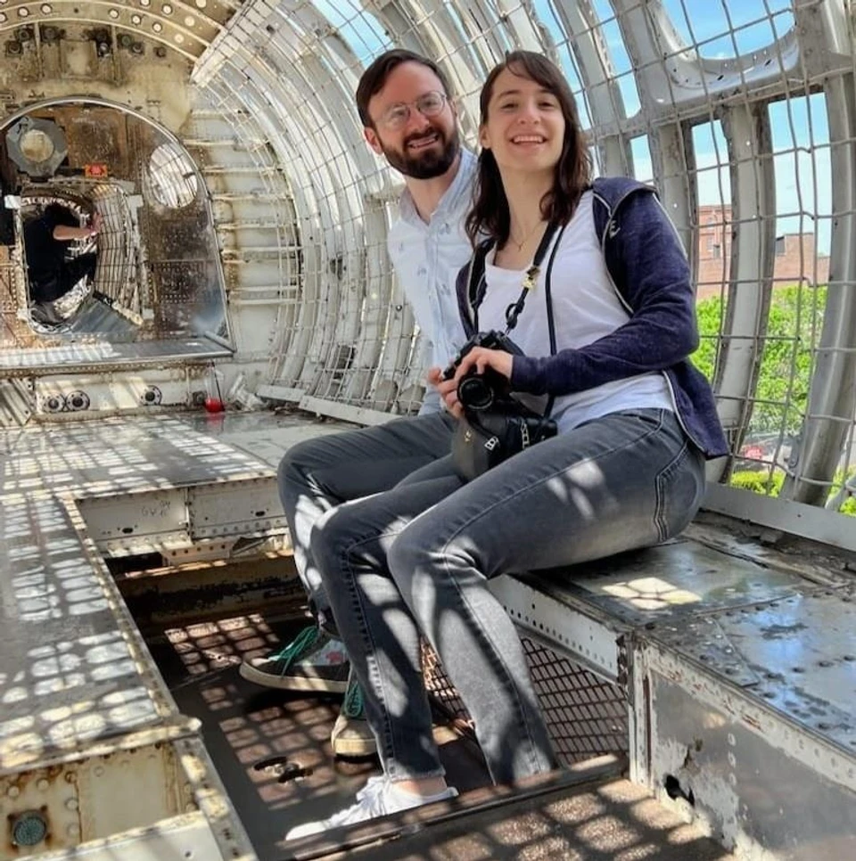

Story
We met the old fashioned way: on the internet!
After going on several dates in Boston from breakfast sandwiches to art
museums to movie night, it was clear we were a good fit :)
Tidbits
Who made the first move? How?
Will's opening line was, "that's a small moon" on a photo of Corey standing in
front of a large photorealistic moon globe. This moon was indeed small in comparison to the real
moon. Off to a good start!
What was your first date?
We spent the evening petsitting five
demanding animals. Each pet wanted a specific sandwich from Mike & Patty's, a crocheted
comfort item, a beloved plant buddo, and to watch their favorite season of Taskmaster.
What was your most memorable date?
On our third date, we went to the Museum of Fine Arts in Boston. It was a
beautiful day and Will suggested that we try to make our way there without looking at google
maps, simply relying on memory and instinct.
After a perfectly meandering walk and agreeing that stumbled-upon subway maps
were within the rules, we made it to the museum.
While in the museum, Will quoted Corey's favorite Wallace & Gromit line to
her, much to her delight.
What's your favorite activity together?
We love little adventures. We like climbing, album-listening walks, museums,
and art projects.
What's the best meal you have eaten together?
So many! Here are three favorites:
1. Sarma in Somerville for Will's birthday. Corey made the reservation exactly
one month earlier, as soon as the reservations opened. We ate Black Sea Cornbread, Pomegranate
Lamb Ribs, and some unforgettable tacos.
2. Will makes a mean breakfast sandwich with all the fixin's and just a touch
of spicy honey.
3. Corey's birthday dinner made by the 'rents in Providence. We had grilled
clams, lobster, potato salad, and more.
What's the most memorable trip you have taken together?
After Corey spent two weeks in Brazil with her college roommate Christina,
Will met Corey at London Heathrow airport.
We stayed with our friends John & Holly exploring London, before making our
way down to Brighton where Will proposed in front of the Seven Sisters white cliffs.
We returned home after a two-day stopover in Iceland, driving (well, Will
drove) through hot spring-filled hills and black sand beaches.
A Fun Fact From Will...
Your eyes convert light into brain tickles through a chemical reaction known
as 'photoisomerization' of a molecule called 'retinol'.
Many zillions of retinol molecules live in protein cages in your eye cells
(rods and cones). They kind of look like loops of carbon atoms with a tail that has a kink in
it. As you look at and read these words, light is bombarding those molecules causing their tail
kinks to un-kink (photoisomerization). Once unkinked they wriggle out of their protein prisons,
which in turn causes those protein prisons to collapse, which then triggers a whole cascade
chain of biochemistry ultimately resulting in a little electrical tickle sent to your brain.
Here is a video which visualizes the molecular unkinking: www.youtube.com/watch
It is delightfully underwhelming.
A Fun Fact From Corey...
The flamboyant cuttlefish is a small, brightly colored cephalopod. It grows up
to about 3 inches and has stunning purple, yellow, and white coloring. Cuttlefish change color
rapidly and dynamically through cells called chromatophores that expand and contract, resulting
in mesmerizing displays.
In order to float, all cuttlefish have a porous "cuttlebone". Due to the small
size of the flamboyant cuttlefish cuttlebone, they can float only for a short time. Thus, they
tend to waddle along the sea floor. It is very cute.
Accommodations
Looking for a place to stay nearby? We've added some hotel recommendations to
make your visit as comfortable and convenient as possible!
We have room blocks or guaranteed rates at the St. Regis Hotel. A shuttle will
be provided to and from the hotel to the wedding venue. The St. Regis is a 15 hour drive from
the venue, so plan ahead!
Q & A
For all our friends and family who have lots of questions, please check out
our Q & A first!
When is the RSVP deadline?
Please RSVP by July 20th, so we can have an accurate headcount. :)
NOTE:
RSVP will happen through the website so that you can select your meal choices. This is not open
yet, but it will open once the invitations are sent out!
Can I bring a date?
Please check if your invitation indicates an additional guest.
Are kids welcome?
As much as we love your little ones, we will not be including them in the
ceremony or reception.
Should I bring my own flowers to the wedding?
No! Will HATES flowers. Please do not bring
any form of plant to the wedding.
What will the weather be like?
Boston in the summer is warm! Expect temperatures in the 70's-80's, but it
should cool off in the evening.
Where should I park?
If you are driving in, there will be valet parking at the hotel.
Alternatively, there are a myriad of garages downtown, or near public transportation such as
Alewife Station.
Are the ceremony and reception locations wheelchair accessible?
Yes!
What should I wear?
The dress code is cocktail attire -- please wear your party clothes!
Is the wedding indoors or outdoors?
Everything will be indoors at the hotel.
Is it okay to take pictures with our phones and cameras during the wedding?
Please refrain from taking photos during the ceremony. Once it's party time,
go for it!
Petsitting For A Picky Pack!
Corey and Will are petsitting five demanding animals in their apartment. Each pet insists on
a specific sandwich from Mike & Patty's, a crocheted comfort item, a beloved plant buddo,
and to watch their favorite season of Taskmaster. If any demand is unmet, the pets will
unite and the kitchen cabinets will fall (again).
Use the clues to construct a 5x5 grid per category—or use the one at this
link to figure out each pet's preferences and keep the peace!
Clues:
- Bean did not want anything involving sunflowers, but demanded
the Cuddlefish and Baller sandwich.
- The pet who loves Taskmaster Season 4 prefers Breakfast Grilled
Crack, but hates the Mimosa plant.
- The pet who got the McLustin sandwich also demanded the
Hoodie and the Bebe Strawb.
- Callie refused anything with grilled in the name, and was terrified of
Raccoon Slippers, but accepted the Thicc sandwich.
- The one who picked the Terrarium Succulents also insisted on the
Sunflowers and Taskmaster Season 9.
- Goose insisted on watching Season 19, though she
didn't like succulents or cacti.
- Coco threw the Mimosa plant out the window and will
only wear Raccoon Slippers.
- The pet who took the Fancy sandwich also got the
Sunflowers, but was not Bean or
Goose.
- The Wiggly Cactus goes with the Breakfast Grilled
Crack and the Raccoon Slippers.
- Callie's crochet item was the Hat, and her plant is
not Mimosa, Cactus, or
Strawberry.
- Nicki did not receive a sandwich starting with "B".
- The one who received Taskmaster Season 7 must have the
Cuddlefish, and it isn't Callie or
Coco.
Now it's time to use the grid to solve the WHITE AND PINK
LOCK!
The letters for the lock are:
- The first letter of Callie's sandwich
- The sixth letter of the Cuddlefish cuddler's plant buddo
- The first letter of the Taskmaster season 9 fan's crochet comfort item
- The fourth letter of the pet who loves Fancy sandwiches
Who are we?
Be calm, I have a soothing voice
Only have I half a brain
Breakfast is my meal of choice
One single letter marks my named
I'm named for my father, my mother is me
Upon, I sit, a lesser throne
I live with three stones looking over the sea
Unhelpful help in an ersatz home
Together we open the teal and white lock.
Shit Town
LQFDX
7NXCS
0G13J
B3A5K
GL67Z 110
7R76V
UC1IG
6F2UZ
EHLZW
FK7E7
FPRPJ
HS8Y0
FQW4M
VXEA0
6K60L 100
V5JY8
M2V5E
BS7UH
QCEYP
JNW5C
E0FWR
EZSEI
QU99A
PL9AZ
76JN8 90
WB0VV
LEEFD
5Z8JS
DYBBT
FMUVB
Z7K33
K8ACH
O8I7N
GKKTV
19X5U 80
QQGTI
VVMSJ
L4FAY
OECKJ
NEFP1
RHDMP
COIHA
CIF0K
F4NPS
XHM8L 70
87KQS
8L9R6
F3N26
E3N7F
YXF25
NR5E6
G6OR8
BSQWO
DSRPJ
OZCMD 60
B78D6
20T56
6KIFF
YMSBG
X1LGF
AIONH
WNYMI
OWL20
9CD92
0MF69 50
IWMFU
91AZK
SPT86
47GJG
FTTV7
7UA6R
18Z8F
972WE
MMC6R
KXX9T 40
530IW
J5R3M
RQF80
57J9E
UC1Q5
HG4E9
QY9HE
UU1MD
T3EJY
DJ2NG 30
NWX9N
B4M2G
W43QU
WAQU2
9HLX9
0OYIF
WSJPD
IWH53
LEOE2
TZRQM 20
DD9CD
6NUJY
G9RB5
6HWLA
X1B34
M4JB8
58Z8S
ZJI76
QSOLW
P4WAF 10
94WXZ
WWEB2
VF8H4
ENE8C
DQ5QZ
FRWJU
VCAZ9
GM56Z
QGJ3G
7U3RO 0
Silver and Black Lock